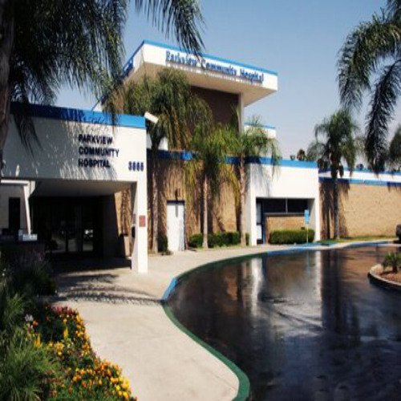
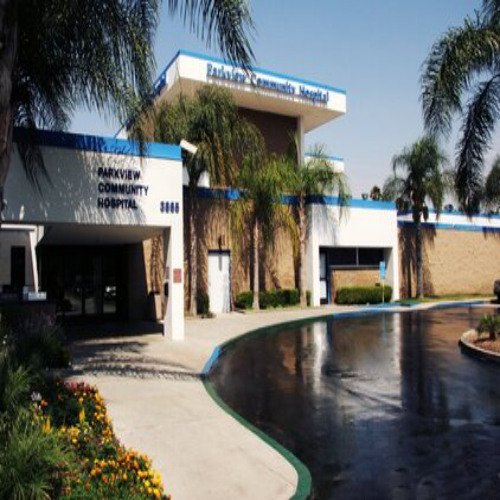

Diana Salazar
Hello, and welcome to my resume home page. My name is Diana Salazar, and I am a first-generation student majoring in sociology. Growing up in a low-socioeconomic income family has taught me extensively about the significance of family and education. Moreover, throughout my years of working in several environments, I have gathered considerable quantities of experience in communication, time management, and problem-solving abilities. By extension, working with various demographics, such as age groups and ecological regions, has allowed me to achieve exceptional communicational skills.
My interest includes researching and learning about racial disparities in the United States' formal organization, specifically the criminal justice system and health equity. As a person who desires people of all demographics to receive a life full of opportunities and rights, it is only natural my interests reflect learning how to achieve that.
Please feel free to look over my page and reach out through my email at dsala084@ucr.edu.
Experience
Amazon Fullfillmet Center
• Retrieved about as many as 100 items per hour during ten-hour shifts with the development of a fast-time-oriented mentality in order to have a punctual work shift when preparing orders.
• Operated software systems through a computerized scanner by remembering special key codes in order to receive and deliver items effectively.
• Achieved proper time-managing skills during peak seasons by planning in advance to meet work requirements of six days of work during one week.
W.W Fashion
• Assisted countless customers daily by providing them with pleasant customer service in the form of answering questions and professionally greeting them.
• Provided quality customer service by building trust with clients through acts of service so they would return for future sales.
• Organized supplies like clothing, shoes, and jewelry throughout the day to keep the workplace contained and clean.
Parkview Community Hospital
• Maintained a sanitized environment for the hospital's patients by time-managing their daily room checkups.
• Monitored the needs of countless patients assigned for the day by removing trash and cleaning their environment with proper chemicals and sanitation processes quickly and efficiently.
• Learned to control high-stress levels when working in demanding hospital environments like the ER and ICU departments.
• Performed proper protocols for high-risk diseases to keep colleagues and other patients secure and the specific type of disease contained.
Education
University of California Riverside
University of California Riverside
Portfolio


